地政学
アルジェは地中海とサハラを結ぶ国家首都であり、大統領府、官庁、国会、大使館、港、空港が近距離に集まります。欧州、マグリブ、サヘル、エネルギー外交の結節点として、街路の警備と港湾の動きが国際政治を映します。

🇩🇿 アルジェリア / 北アフリカ / World City Atlas
地中海の港、丘のカスバ、植民地都市の記憶、独立国家の中枢、エネルギー経済、若い人口の日常が重なるアルジェリアの首都です。
都市の骨格
アルジェは、地中海に開く港と背後の丘陵が都市の形を決めます。カスバ、植民地期の大通り、政府機関、大学、郊外住宅地、工業地帯が湾岸に沿って連なります。
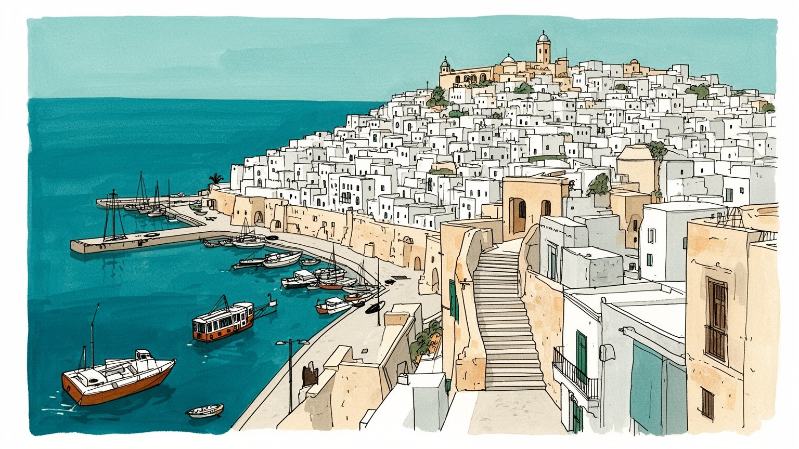
アルジェは地中海とサハラを結ぶ国家首都であり、大統領府、官庁、国会、大使館、港、空港が近距離に集まります。欧州、マグリブ、サヘル、エネルギー外交の結節点として、街路の警備と港湾の動きが国際政治を映します。
港湾、行政、銀行、大学、病院、建設、交通、通信、石油ガス関連の本社機能が雇用を支えます。国家投資に頼る面が大きく、若者の仕事探し、非公式労働、住宅費、通勤が都市経済の現実を決める焦点です。家計に響きます。
イスラムの礼拝、アラビア語とベルベル語の記憶、フランス語文化、独立戦争の追悼、音楽ライ、文学、サッカーが都市の声を作ります。カスバの路地と植民地期の街並みは、信仰と記憶が重なる厚い文化層として残ります。
海辺の散歩、カスバ、殉教者記念塔、博物館、食堂は旅を引き寄せるが、住民には渋滞、住宅不足、若者雇用、暑さ、老朽建物、公共空間の不足が日常です。観光の魅力は暮らしの条件と強くつながる現実でもあります。
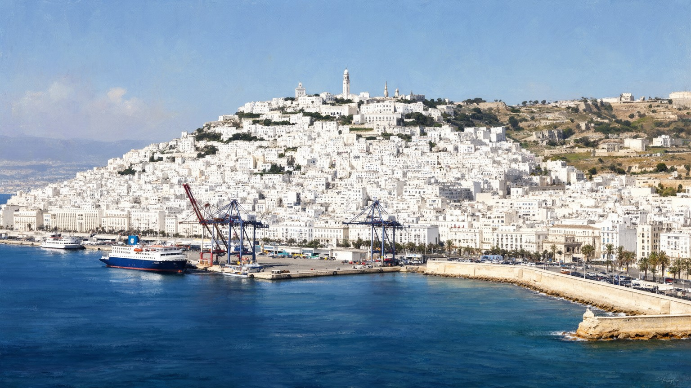
アルジェの都市性は、地中海に開いた湾と、すぐ背後に立ち上がる丘陵から始まります。港は食料、機械、建材、燃料、旅客を受け入れ、湾岸道路と鉄道はオラン、コンスタンティーヌ方面へ伸びます。丘の斜面にはカスバ、植民地期の街区、集合住宅、大学、行政施設が積み重なり、白い壁と青い海の強い対比を作ります。平地が限られるため、港湾、官庁、商店街、住宅、バス動線が短い距離で競合し、渋滞や土地不足が店頭価格や通勤時間に響きます。海は欧州への窓であると同時に、輸入依存、国境管理、漁業、港湾労働の現場です。朝はディーゼルの匂い、潮風、クラクション、パン屋の香りが混ざり、夕方には海辺を歩く家族や若者が湾の余白を使います。アルジェを読むには、港のクレーン、丘を上る階段、郊外へ延びる道路、空港へ向かう動線を一つの都市装置として見る必要があります。海を向く首都であることは、世界とつながる力であり、外部の価格変動を最初に受ける脆さでもあります。魚市場の声、貨物車の列、丘上から見下ろす白い家並みは、地中海都市の明るさと、首都の重い機能が同時に存在することを教えます。湾の景観は飾りではなく、食料、仕事、安全保障、観光の入口です。港と丘の近さが、アルジェの美しさと窮屈さを同時に作っています。だから移動の設計が生活の質を左右します。
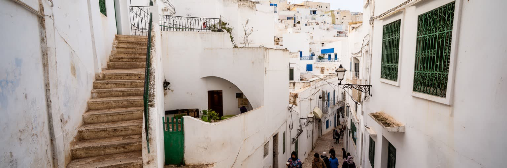
アルジェのカスバは、観光写真のための旧市街ではなく、オスマン期から独立戦争までの政治、信仰、住まい、抵抗の記憶を抱える斜面の都市です。狭い路地、階段、白い壁、中庭住宅、モスク、小さな店は、暑さを避け、海と丘をつなぐ生活の知恵でもありました。ですが老朽化、人口密度、修復費、崩落リスク、所有権の複雑さは、世界遺産としての評価だけでは解けない難題です。外部から見れば迷路の魅力でも、住民には水道、排水、電気、救急車の入りにくさ、子どもの遊び場不足が現実になります。独立戦争期には、路地が抵抗と摘発の舞台になり、都市空間そのものが政治的な意味を帯びました。今日の保存は、石や漆喰を直す作業であると同時に、住民が中心部に残れる条件を作る社会政策です。学校、診療所、作業場、菓子店、携帯電話で連絡を回す近所の情報網が残るかどうかが、遺産を生きた都市として保てるかを決めます。小さな食料品店や修理屋は、観光客の目立つ通りよりも、住民の暮らしを支える重要な場所です。修復が外観だけに偏れば、家賃上昇や退去で生活の厚みが失われます。路地の声、香辛料と湿った石の匂い、礼拝へ急ぐ足音も、建物と同じくらい大切な遺産です。子どもと高齢者が安心して歩けるかが、保存の成否を示します。そこに世界遺産の本当の価値があります。生活の声まで残ることが、保存の核心です。
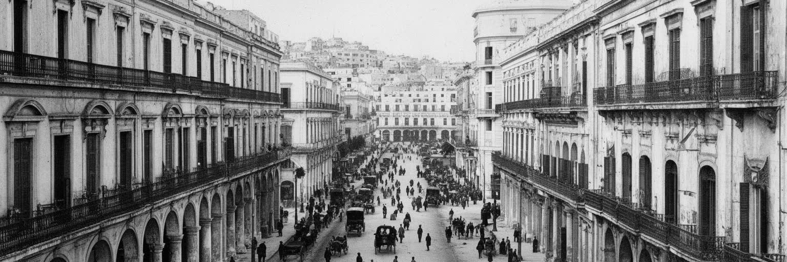
アルジェの中心部には、フランス植民地支配が作った大通り、広場、官庁、アパート、港湾施設が残ります。海に面したファサードやヨーロッパ風の街路は端正ですが、その景観は土地の収奪、住民の分断、差別的な都市計画と切り離せません。フランス領アルジェリアの首都的な都市として、アルジェは植民者の行政、軍、商業の拠点であり、同時に被支配側の抵抗が組織された場所でもありました。独立戦争では、爆破、検問、拷問、地下組織、報復が都市の日常を覆い、カスバと欧州人街の距離は政治的な境界にもなりました。独立後、都市は植民地期の建物を国家首都の空間として使い直し、通り名、記念碑、学校教育、映画、家族の語りを通じて記憶を更新してきました。建物のバルコニー、映画館、裁判所、郵便局、海岸沿いのアーケードは、日常の便利さと歴史の痛みを同時に宿します。独立記念日や殉教者を悼む行事の時、街路は過去を確認する公共の舞台になります。新聞、テレビ、家族の会話は、その記憶を今の政治や生活費の話題と結び付けます。学校の遠足や記念碑への訪問も、都市記憶を次世代へ渡します。街並みを単にフランス風の建築と呼ぶだけでは足りず、支配の装置が取り戻され、住民の買い物、通学、通勤、夜の散歩に組み込まれた空間として見る必要があります。記憶は日常の足音の中に残ります。
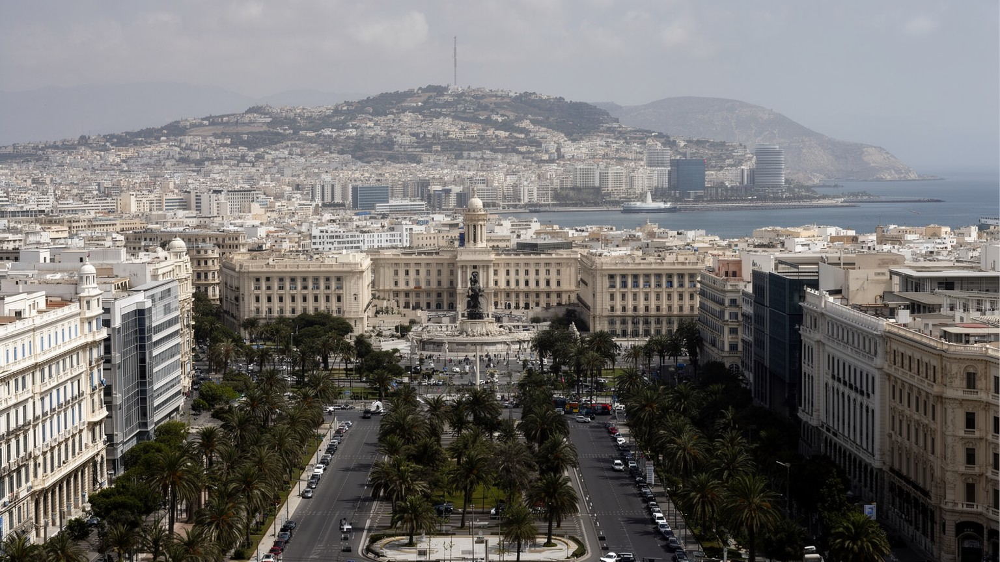
アルジェはアルジェリアの最大都市であるだけでなく、国家が自分を運営する場所です。大統領府、政府機関、国会、裁判所、国営企業、大使館、報道機関、大学、軍と警察の施設が湾岸と丘陵の限られた空間に集まります。行政手続き、採用、予算、外交、治安、記念式典、抗議の記憶は、道路規制、警備の姿、官庁街の通勤、新聞やテレビ、SNSの見出しとして都市に現れます。独立後の国家建設では、教育、住宅、医療、インフラ、国営企業が首都から全国へ展開され、アルジェは地方から来る学生、官僚、労働者、患者、求職者を受け入れてきました。一方、首都への集中は地域格差、住宅不足、交通混雑、行政依存も生みます。政治が首都に集まりすぎるほど、若者の不満や社会運動も広場、大学、カフェに現れやすいです。国家首都としてのアルジェを読むには、記念碑や官庁だけでなく、役所へ向かうバス、待合室、大学キャンパス、警備された交差点を見る必要があります。地方から来た人にとって、アルジェは機会の場所であると同時に、手続き、家賃、言語、親族の支援を試される場所でもあります。地方紙や口コミ、親族の電話が、求人や住宅、役所の進み具合を知る情報網になります。国家の近さは安心にも圧力にもなる都市です。首都の日常は、制度へ近づくための長い待ち時間でもあります。
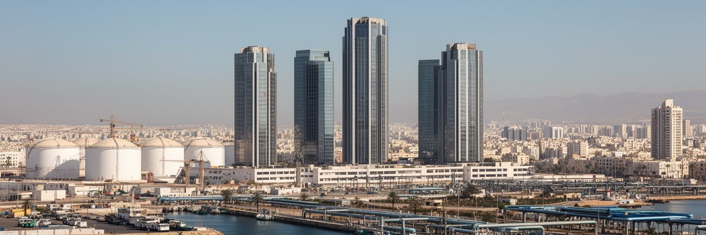
アルジェリア経済を理解するには、石油と天然ガスを避けて通れません。主要な産地や輸出施設は首都の外にありますが、アルジェには省庁、国営企業、銀行、保険、法律、技術者、大学、商社、物流の本社機能が集まり、エネルギー収入を公共投資や雇用へ配分する意思決定が集中します。港湾は機械、部品、建材、食料、消費財を扱い、国の輸入と都市生活を支えます。価格が高い時には道路、住宅、公共施設、補助金が拡大しやすい一方、下落すれば財政、雇用、輸入、若者の期待に影響が出ます。首都の経済は金融街の取引だけでなく、港湾労働、倉庫、通関、整備、配送、建設、行政書類を処理する無数の仕事で成り立ちます。正式な雇用に届かない人は、路上販売、修理、配達、携帯関連の小商いで収入をつなぎます。焦点は、炭化水素に依存する収入を、製造業、再生可能エネルギー、デジタル、観光、教育、医療へどう広げるかです。港に入る貨物、官庁の予算、郊外の建設現場、ショッピング街の輸入品は、同じ資源経済の循環に結び付いています。大型店や市場の品ぞろえは、外貨、補助金、通関の速さを映す生活指標でもあります。家庭の買い控えも、資源価格と為替の遠い波を受けます。資源の豊かさを若者の技能と生活の安定へ変えられるかが、首都経済の中心焦点です。港の音はその焦点を毎日知らせます。
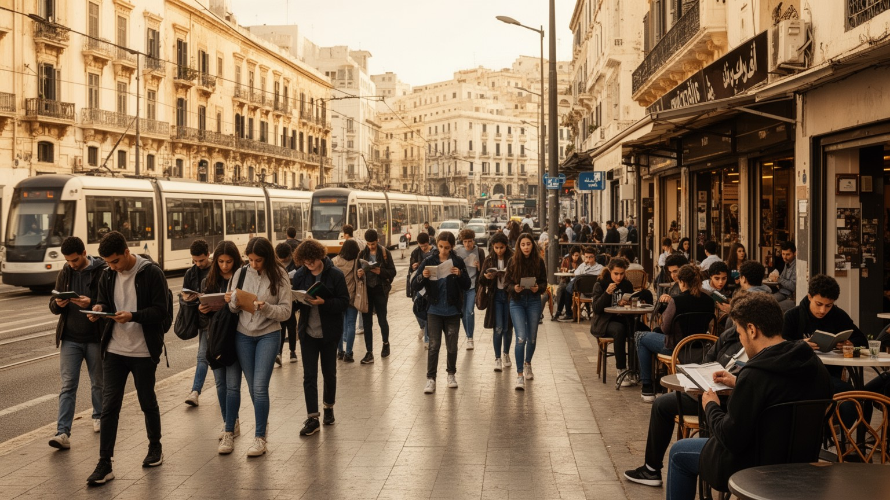
アルジェの街路には、大学へ向かう学生、カフェで待ち合わせる若者、スマートフォンで仕事を探す人、家族の期待を背負う新卒者が目立ちます。アルジェ大学や専門学校、医療・工学系の教育機関は全国から学生を集めますが、行政、国営企業、石油ガス関連だけで安定した仕事を十分に吸収することは難しいです。民間企業、スタートアップ、観光、物流、医療、情報通信への期待はあるものの、許認可、資金、語学、技能、住宅費、通勤時間が壁になります。雇用の難しさは、単に失業率の数字ではなく、結婚、独立、住宅取得、家族への仕送り、政治への信頼を左右する生活条件です。大学や職業訓練が都市に集まることは強みですが、学んだ技能が職場で生かされなければ不満は蓄積します。アルジェの若者文化は、USMアルジェやMCアルジェの試合、路地のサッカー、チャアビやライ、SNS、カフェ、海辺の散歩、抗議の記憶を通じて表現されます。夜は音楽、軽食、試合結果、友人同士の連絡が、街の情報と感情を循環させます。学校の成績、語学、家族の人脈は、進路の選択肢を大きく変えます。女性の就業、通勤の安全、保育、語学教育、デジタル技能も重要です。若い世代が家庭の支援だけに頼らず都市で自立できるかが、アルジェの社会的な安定を左右します。教育は希望であり、焦りの源でもあります。
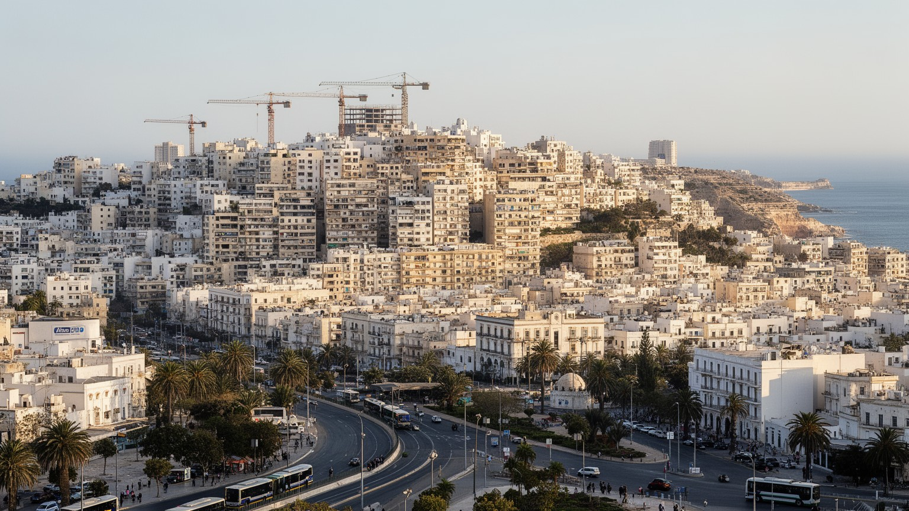
アルジェの暮らしを考える時、カスバや中心部だけでは都市の全体像は見えません。人口増加と住宅需要に応じて、集合住宅、公共住宅、郊外団地、戸建て地区が湾岸と丘陵の外側へ広がり、通勤圏は大きくなっています。国家は住宅建設を重要政策として進めてきましたが、立地、広さ、交通、学校、医療、商店、公園の質には差があります。中心部の古い建物では老朽化と過密が問題になり、郊外ではバスや鉄道へのアクセス、渋滞、仕事場までの距離が生活時間を削ります。若い世帯にとって住宅は、結婚や自立の条件であり、仕事があっても家がなければ生活設計は進みません。子どもは団地の空き地や学校帰りの店先で遊び、高齢者は坂道、階段、病院への移動に負担を感じます。再開発や新しい団地は住戸を増やす一方、地域の商店、近隣関係、歩ける公共空間を作れるかが問われます。パン屋、薬局、小さな衣料店、携帯修理店が近くにあるかどうかは、家賃以上に日常の便利さを左右します。エレベーター、排水、ゴミ収集、夜の照明、子どもの遊び場のような小さな設備が、住まいの満足度を大きく変えます。住宅政策を交通、雇用、教育と切り離せば、住まいは増えても生活の負担は残ります。都市の公平性は、中心から遠い地区でこそ試されます。住まいは家族の未来を決める都市インフラです。近所の安心もそこから生まれます。
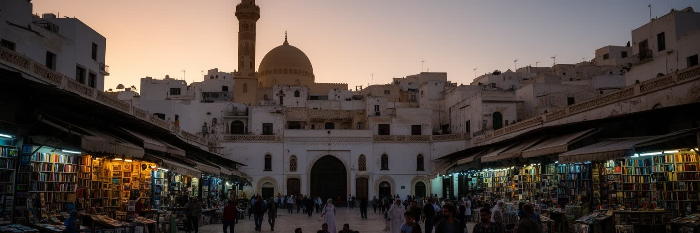
アルジェの宗教生活は、巨大なモスクの建築だけでなく、近隣の礼拝所、金曜礼拝、ラマダンの夕食、墓参、結婚式、葬送、家族の祈りとして都市の時間を形作ります。礼拝の呼びかけは商店の開閉や通りの人波を変え、ラマダンには夕方の市場、パン屋、菓子店、家庭の食卓が特別な緊張と温かさを持ちます。イード、預言者生誕祭、独立記念の行事は、学校、職場、親族訪問、公共交通の混み方まで変えます。イスラムは統一的な背景ではなく、地域、世代、家庭、教育、政治経験によって表れ方が異なる生活の枠組みです。アルジェにはアラビア語、ベルベル語、フランス語の文化が重なり、宗教的な規範と都市的な表現が常に交渉しています。チャアビの歌、ライ、映画、文学、サッカー、風刺、カフェの会話は、社会の息苦しさや希望を語る別の回路になります。夜の音楽空間や家族の祝いは、信仰の時間割と衝突するよりも折り合いを探します。宗教施設は祈りの場であるだけでなく、慈善、教育、近隣の相談にも関わります。子どもは学校と家庭で礼拝や祝日の意味を学び、高齢者はモスクや親族訪問を通じて地域とのつながりを保ちます。祈りの時間を読むことは、都市の社会的なリズムを読むことでもあります。信仰は公的制度と家庭生活をつなぐ日常の言葉でもあります。音と沈黙の切り替わりが街を整えます。
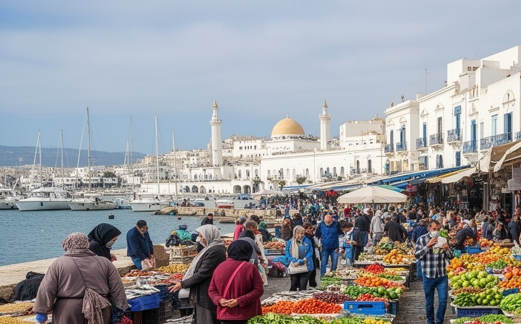
アルジェの食文化は、地中海の魚、オリーブ、野菜、パン、クスクス、煮込み、香辛料、菓子、コーヒー、ミントティーが家庭と街路を結ぶところにあります。市場では沿岸部の魚介、ミティジャ平野の農産物、内陸から来る肉や穀物が並び、港湾と道路網が食卓を支えます。朝の店先では焼きたてのパン、コーヒー、揚げ物、香辛料、海の匂いが混ざり、夕方には家族連れと学生が食堂や菓子店に集まります。カフェは、労働者の昼食、学生の会話、サッカー観戦、政治談義、地元ニュースの確認の場になります。ラマダンの夕方には、ハリラ、ブリック、デーツ、菓子を買う人で通りの速度が変わり、都市の食は宗教暦と強く結び付きます。フランス植民地期の影響はパン、カフェ、菓子、店構えにも残りますが、アルジェの食卓は家庭料理、地域の味、独立後の都市生活の中で作り直されてきました。物価上昇や輸入依存は、パン、油、砂糖、牛乳、野菜の価格を通じて家計に直結します。市場周辺の衣料店、金物屋、露店は買い物と情報交換を兼ね、値段の変化はすぐ会話になります。食を読むことは、誰が市場へ運び、誰が調理し、誰が家族の食費を管理しているかを見ることでもあります。皿の上には、海岸都市と資源国家の日常が小さく映っています。味は観光資源である前に、家計と近所付き合いの基盤です。
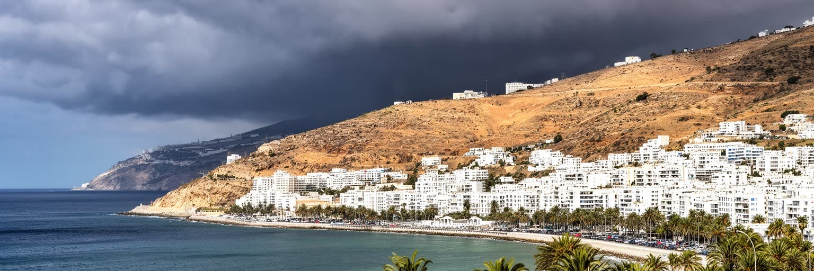
アルジェの気候は地中海性で、冬に雨が多く、夏は乾いて暑いです。海風は暑さを和らげますが、斜面の住宅地、交通量の多い道路、舗装面の多い街区では熱がこもりやすいです。海岸沿いの散歩道、広場、カフェ、木陰は、住民が都市の圧力から少し距離を取るための重要な公共空間になります。若者が友人と集まり、家族が夕方に歩き、釣り人が海を眺め、観光客が湾を撮る場所は、階層や世代を越えて共有される都市の呼吸です。買い物袋を持つ高齢者、学校帰りの子ども、露店の売り手、夜の軽食を待つ人が、同じ海風の中で時間をずらして街を使います。一方、公共空間が少ない地区や、交通が危険な場所では、子どもや女性、高齢者が自由に休める場所は限られます。冬の雨は坂道、排水、老朽住宅に負担をかけ、夏の熱波は屋外労働者、通勤者、低所得世帯に響きます。気候変動が進めば、海岸浸食、豪雨、熱、電力需要の増加も重要になります。夏の夜には潮の匂い、車の熱、軽食の煙、遠い音楽が重なり、涼しさを求める人の流れが海へ向かいます。青い海だけでなく、日陰、排水、歩道、公共交通、誰でも使えるベンチや公園を見ることが、アルジェの暮らしやすさを測る手がかりです。気候への適応は、景観ではなく生活の安全策です。冬の雨音も夏の乾いた光も、都市の時間割を変えます。日々の条件です。